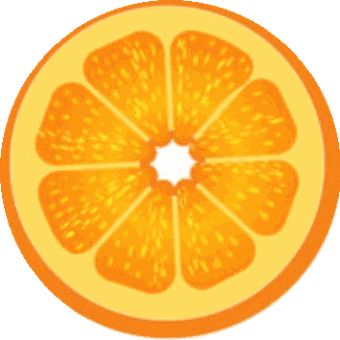

Atelier
Un format interactif et participatif : on expérimente, on échange, on repart avec des outils concrets.

En entreprise · Sur site ou en visio
Vous souhaitez instaurer cette culture dans votre entreprise ? Des interventions originales et impactantes, alliant diététique et hypnose, pour des équipes plus énergiques, plus sereines et plus performantes.
Des interventions originales et impactantes, alliant diététique et hypnose
Des moments inspirants pour éveiller et sensibiliser vos équipes
Des outils concrets et directement applicables au quotidien
Un impact durable sur l'énergie, la santé et le bien-être de vos collaborateurs
Les bénéfices
L'enjeu
Ces difficultés impactent directement vos collaborateurs — et votre performance. Mieux manger et mieux gérer ses émotions, c'est l'investissement le plus efficace que vous puissiez faire pour vos équipes.
Sur site ou en visio
Un format interactif et participatif : on expérimente, on échange, on repart avec des outils concrets.
Un moment inspirant pour sensibiliser un large public et donner envie de changer, en douceur.
Un suivi individuel, sur site, pour un accompagnement personnalisé de vos collaborateurs.
Ils ont franchi le pas
Idées de sujet
Quelques thèmes possibles — et bien plus encore. Chaque intervention est 100 % personnalisable selon vos besoins.
Et pourquoi pas en tête à tête ?
Une heure, une personne, un vrai suivi. Chaque séance — diététique & hypnose — est construite autour de la situation personnelle du collaborateur, en toute confidentialité et dans le respect du secret professionnel.
Le devis est établi après un premier entretien en visio, gratuit et sans engagement, pour cerner vos besoins et construire l'intervention qui vous ressemble.